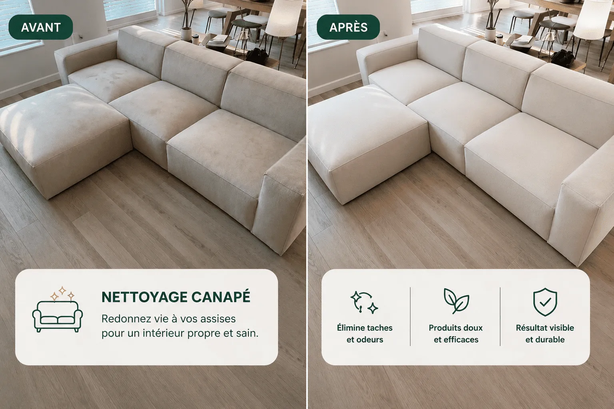

Nettoyage de canapé à Genève — dès 139 CHF
Votre canapé comme neuf, chez vous à Genève, sans supplément surprise.

Votre canapé cache plus que vous ne le pensez
Même nettoyé en surface, un canapé accumule acariens, bactéries et allergènes en profondeur — invisibles, mais présents. Les acariens sont responsables de plus de la moitié des allergies respiratoires. Enfants, animaux, asthmatiques : c'est souvent la première cause insoupçonnée.
Et au-delà de la santé : un canapé coûte cher. Un nettoyage professionnel régulier peut prolonger sa durée de vie de plusieurs années — une fraction du prix d'un remplacement.


Nos tarifs, sans surprise
+ Fauteuil assorti (~20 min) : +30 CHF
Prix pour un canapé en état standard, tissu ou microfibre. Alcantara, taches importantes (urine, vomi, encre) ou canapé non déhoussable : devis confirmé sur photo par WhatsApp, sans supplément caché une fois le prix confirmé.
Pourquoi le faire maintenant
Vous profitez mieux de votre salon
Un canapé propre, c'est un salon où on a envie de s'installer. Simple.
Fini les acariens
Ils vivent dans les coussins. Ils causent la moitié des allergies. On les enlève.
Les taches du quotidien
Vin, café, stylo — ça arrive à tout le monde. On les enlève, en profondeur, pas juste en surface.
Les petits accidents
Un enfant qui renverse, qui grimpe avec les chaussures — ça se nettoie. Pas de jugement.
Les odeurs d'animaux
Votre chat ou chien passe ses journées dessus ? Poils et odeurs s'incrustent. On règle ça aussi.
Comment ça marche
- Vous nous contactez sur WhatsApp avec une photo de votre canapé
- On vous confirme le prix exact en moins de 24h
- On intervient chez vous sous 48h
- Vous payez une fois satisfait du résultat

Combien de temps avant de le réutiliser ?
| Format | Séchage estimé |
|---|---|
| 2 places | 2 à 4h |
| 3 places | 3 à 5h |
| Angle / 4-5 places | 4 à 6h |
Le temps de séchage varie selon la météo et l'aération de la pièce. Votre canapé reste utilisable rapidement.
Une méthode adaptée à chaque matière
Tissu et microfibre : injection-extraction en profondeur — un produit est injecté dans les fibres puis aspiré avec les salissures. Résultat visible immédiatement.
Alcantara, velours, tissus délicats : traitement adapté pour préserver texture et couleurs.

Pourquoi pas le faire soi-même ?
Location machine (DIY)
- Coût
- 30-60 CHF/jour machine + 15-25 CHF produit
- Risque
- Tissu abîmé, humidité mal évacuée → moisissures internes
- Temps
- À votre charge, résultat incertain
- Reprise
- Aucune
Happy Move
- Coût
- Dès 139 CHF, tout compris
- Risque
- Produits pros adaptés à chaque matière
- Temps
- On s'occupe de tout, résultat garanti
- Reprise
- Paiement seulement après le résultat
Louer une machine semble économique sur le papier. En pratique, le risque d'abîmer le tissu ou de mal sécher — avec de la moisissure qui se développe à l'intérieur du canapé — coûte souvent plus cher qu'un professionnel dès le départ.
Questions fréquentes
Non, on intervient directement, coussins compris. Rien à préparer.
Certaines taches très anciennes ou incrustées peuvent s'atténuer sans disparaître à 100%. On vous le dit honnêtement avant l'intervention si c'est le cas sur la photo — pas de mauvaise surprise après coup.
Nos produits sont adaptés à chaque matière et nous sommes couverts par une assurance responsabilité civile professionnelle.
Oui, jusqu'à 24h avant sans frais. En dessous, des frais de déplacement de 30 CHF peuvent s'appliquer.
Selon disponibilité — dites-nous vos contraintes sur WhatsApp.
Comptez 30-60 CHF de location/jour + 15-25 CHF de produit, sans compter le risque de mal sécher (moisissures internes) ou d'abîmer le tissu. À partir de 139 CHF tout compris, sans risque, c'est souvent équivalent ou moins cher — pour un résultat professionnel, sans mettre votre canapé en danger.
Réserver via le formulaire
Vous préférez ne pas passer par WhatsApp ? Laissez-nous vos coordonnées, nous confirmons votre créneau par téléphone.
078 212 82 52 · info@happymove-ge.ch · happymove-ge.ch